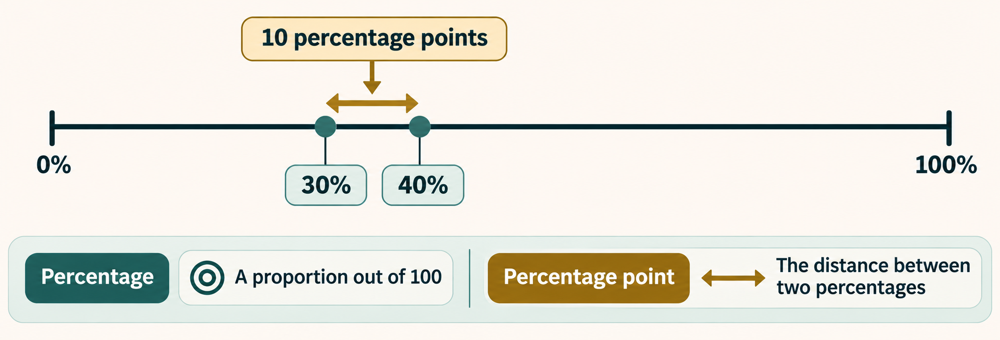
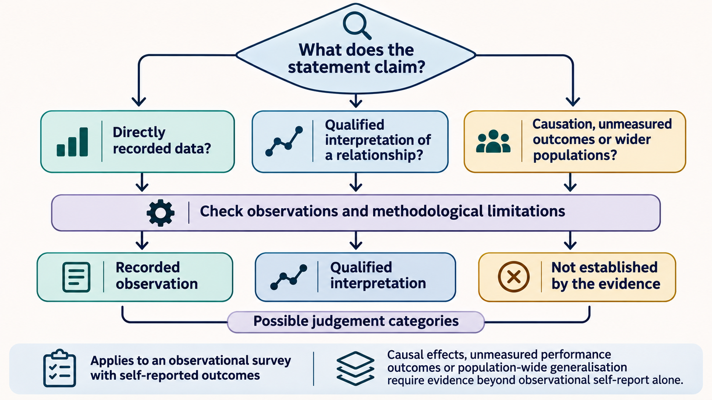
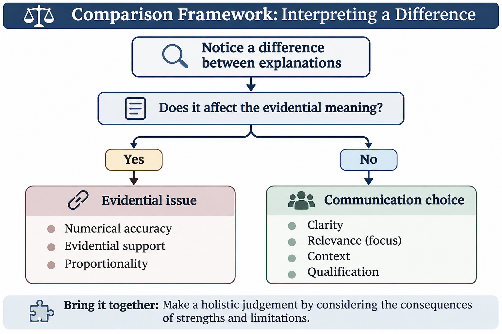

Figure 1. An undergraduate student considering research evidence before writing an explanation.
Research findings often sound straightforward until you try to explain what they really mean. A percentage may be easy to repeat, but harder to interpret. A confident explanation may be persuasive without being justified by the evidence.
In this learning journey, you will work with a fictional research study about study breaks and concentration among undergraduate students. You will interpret the evidence, write your own explanation for a non-specialist reader, compare contrasting explanations and improve your original work.
The emphasis is not on finding one perfect answer. You will develop your ability to recognise quality, make informed communication decisions and explain why some ways of presenting research are more effective than others.
The journey takes approximately 90 minutes of learning time across one week. You can complete it in more than one sitting. Keep your written responses because later experiences ask you to return to your earlier work.
You will begin by interpreting the study and producing an independent explanation. Only after that will you encounter worked examples and more detailed guidance. You will then use what you have learned to diagnose and revise your explanation, before reflecting on the reasoning behind your changes.
You do not need specialist statistical knowledge or external research materials. Everything required to understand the illustrative study is supplied within the journey.
Draft not saved
Interpret the research evidence
Overview
This short self-study resource introduces a fictional investigation into undergraduate study breaks and concentration. You will work with the complete research account, examine the reported figures and consider how confidently different claims can be made from the evidence.
Begin with 'Investigate the study design' and work through the four activities in order. Record your own responses before using the review checklists. You can return to the research account whenever you need to check a detail.
Learning purpose
The activities build from identifying research evidence to comparing reported results, judging the limits of interpretation and preparing for independent communication. Your completed workspaces provide a foundation for 'Write your first explanation', where you will explain the principal finding in your own words before comparing explanations.
Knowledge summary
Reading a research account
A research question identifies what investigators want to find out. To understand the evidence collected in response, distinguish the participants, the research design, the information recorded and the outcome being examined. These features are related but answer different questions: who was studied, how the study was conducted, what was reported and what can reasonably be inferred.
Observational surveys and self-reports
An observational survey collects information about participants' existing characteristics, behaviours or experiences. Researchers may compare groups defined by those reports without assigning people to different conditions. This differs from an experiment in which researchers deliberately introduce or assign conditions.
Self-reported data describe what participants say about their experiences or behaviour. They can provide useful evidence about reported experiences, but they should not automatically be treated as equivalent to independent measurement. A survey about perceived concentration, for example, does not by itself measure academic performance.
Comparing numerical evidence
A count tells you how many participants reported an outcome. A percentage expresses a proportion out of 100 and allows comparisons between groups, including groups of different sizes.
When comparing two percentages by subtraction, the result is expressed in percentage points. For example, if 40% of one group and 30% of another report a characteristic, the difference is 10 percentage points. This is distinct from a relative percentage change.
Keep each count or percentage connected to its group and to the outcome actually recorded. A numerical difference describes a comparison; the arithmetic alone does not establish why the difference occurred.
Observations, interpretations and explanations
An observation is information recorded in a study, such as a participant response, count or percentage. An inference is an interpretation made using observations. The wording of an inference should reflect how strongly the research design and evidence support it.
An association means that two recorded characteristics occur together in a pattern. Causation is a stronger claim: one factor produces a change in another. An observational comparison can provide evidence of a relationship without establishing that one characteristic caused the other.
Evaluating the limits of evidence
When judging a claim, consider whether participants were randomly assigned, whether potentially relevant alternative factors were controlled, how the outcome was measured and which population the participants represent. These questions help establish the boundaries of an interpretation rather than automatically making the recorded observations worthless.
Do not assume that an observed difference is statistically significant, that a causal effect has been demonstrated or that a result applies to everyone unless the supplied research evidence establishes those claims. The appropriate conclusion depends on the particular design, measurements and information available.
Use these distinctions as tools for examining the fictional study. The activities will ask you to make the case-specific comparisons and judgements yourself.
Figure 1. How research design, observations and limitations shape the claims that evidence can support.
The map begins with a research question and connects it to participants, comparison groups and an observational survey. The survey produces self-reported observations that can be expressed as counts and percentages and compared between groups. A separate branch distinguishes a possible association from the stronger claim of causation. Four considerations—random assignment, uncontrolled factors, measurement and representativeness—connect to the interpretation stage because they affect which claims the evidence can support. No study-specific results or completed conclusions are displayed.
Learning outcomes
By the end of this lesson, you should be able to:
Identify the research question, observational method, participants, comparison groups and self-reported outcome in the fictional study. (LO1)
Compare the reported concentration outcomes of the two groups and calculate the difference between their percentages using the correct numerical unit. (LO2)
Distinguish observations supported by the study from interpretations that would require additional evidence, using the research design and methodological limitations to justify the distinction. (LO3)
Identify the evidence and remaining uncertainties they will need to consider when independently communicating the study's principal finding to a non-specialist audience. (LO4)
Investigate the study design
Connect your learning
The purpose of this learning experience is to establish what the research evidence can support before attempting to explain it. Identifying the research question, participants, method and outcome provides the foundation for interpreting the numerical comparison and considering its limitations.
You are investigating a fictional study called 'Study breaks and concentration among undergraduate students'. Its findings were created for educational purposes and do not come from an actual investigation. Begin by examining what the researchers wanted to find out, who participated and how information was collected. You will use this evidence later in 'Write your first explanation', where you will communicate the main finding independently.
Begin with what the research account explicitly states. Distinguish the question being investigated, the way information was collected and the characteristics used to form the comparison groups.
Explore the idea
Read the complete fictional research account, including its method, findings and limitations.
Understanding the research terminology
Research question
A research question identifies what investigators want to find out. It guides which information they collect and compare.
Observational survey
In an observational survey, researchers collect information about people's existing experiences, characteristics or behaviours. They do not necessarily change what participants do. This differs from an experiment in which researchers deliberately assign conditions or interventions.
Participant
A participant is a person whose information contributes to a study. The number of participants tells you how many people supplied data, not necessarily how widely the findings apply.
Comparison group
A comparison group is a set of participants considered alongside another set. Groups may differ in a characteristic that researchers want to investigate.
Self-reported data
Self-reported data come from what participants say about their own experiences or behaviours. Such reports can be useful, but they are not identical to independent observation or objective measurement.
As you read the research account, distinguish the actions taken by researchers from the information reported by participants.
Your task
Revising against
Identify the research question, total participants, two comparison groups, observational method and reported outcome.
Research account: Study breaks and concentration among undergraduate students
Study breaks and concentration among undergraduate students
This is a fictional, illustrative research study created for learning purposes. The figures are not findings from an actual investigation.
Research question
Is there a relationship between taking regular short study breaks and reporting good concentration among undergraduate students?
Method
Researchers conducted an observational survey of 200 undergraduate students. Students reported their study habits, including whether they took regular short breaks, and whether they experienced good concentration while studying.
The researchers compared two groups formed from students' reported break-taking habits:
Group A: 100 students who reported taking regular short study breaks.
Group B: 100 students who reported not taking regular short study breaks.
Students were not randomly assigned to take breaks or avoid breaks. The researchers recorded existing reports rather than introducing an experimental intervention.
Reported findings
Group
Reported break-taking
Students in group
Students reporting good concentration
Percentage reporting good concentration
A
Regular short breaks
100
72
72%
B
No regular short breaks
100
58
58%
The observed difference between the reported percentages was 14 percentage points.
Methodological limitations
The study was observational rather than randomised. There was no random assignment to break-taking conditions.
Study habits and concentration were self-reported.
Other potentially relevant factors, including sleep, motivation, workload and study environment, were not controlled.
The study did not establish whether students' reports of concentration corresponded to objectively measured concentration or academic performance.
The 200 participants cannot automatically be assumed to represent all undergraduate students.
The information supplied does not establish statistical significance, confidence intervals or a causal effect.
The study does not establish an optimal frequency or duration for study breaks.
Keep this research account available as your reference throughout the activities. Your task is to work from the reported information rather than assume additional measurements or procedures.
Record these features in the evidence-identification workspace, distinguishing what students reported from what the researchers did.
Evidence-identification workspace
Study feature
Evidence from the research account
What this describes
Research question
Participants
Comparison groups
Research method
Reported outcome
What to produce
An accurate identification of the research question, participant population and total, group definitions, observational survey method and self-reported outcome. The response distinguishes participants' reported behaviours and experiences from researchers' procedures, without attempting to explain the principal finding.
Record these features in the evidence-identification workspace, distinguishing what students reported from what the researchers did.
Your draft is saved on this device when possible. It is not submitted.
Having established how the participants were grouped and what outcome they reported, you can now examine the numerical evidence. The distinction between reported characteristics and measured effects remains important when interpreting the result of the calculation.
Now examine the numbers recorded for each group. Both groups contain the same number of students, so you can compare the reported proportions directly. Use the study's figures to calculate the difference and identify the appropriate unit.
Keep the numerator, group size and percentage together. Compare the two percentages using subtraction and identify the unit that describes a difference between percentages.
Explore the idea

Figure 2. A difference between percentages is measured in percentage points.
A common scale extends from 0% to 100%. Two marked positions indicate 30% and 40%. The segment between these positions is labelled as a difference of 10 percentage points. The percentages describe two separate proportions, while the segment describes the arithmetic gap between them. The example is independent of the fictional study and does not represent a measured effect or explain why two groups might differ.
Percentages and percentage points
A percentage expresses a proportion out of 100. For example, if 30 of 100 respondents select an option, the percentage is 30%.
A percentage-point difference compares two percentages by subtraction. In a separate illustrative example, if 45% of one group and 35% of another group select an option, the difference is:
\[45-35=10\]
The difference is 10 percentage points.
A percentage-point difference is not the same as a relative percentage increase. In this activity, calculate only the difference between the two reported percentages in the study.
The arithmetic tells you how far apart the reported proportions are. It does not, by itself, identify why they differ.
Your task
Revising against
Inspect the numerical findings for both groups in the research account.
Fictional survey findings: Group comparison
The following values are taken from the fictional study, 'Study breaks and concentration among undergraduate students'. They describe what students reported.
Group
Reported break-taking
Number of students
Students reporting good concentration
Percentage reporting good concentration
Group A
Regular short breaks
100
72
72%
Group B
No regular short breaks
100
58
58%
Use these observations to complete your own numerical comparison.
Record each group's size, number reporting good concentration and corresponding percentage.
Numerical comparison workspace
Comparison element
Group A
Group B
Difference or working
Group size
Number reporting good concentration
Percentage reporting good concentration
Percentage-point difference
Subtract the smaller percentage from the larger percentage and record the difference with its correct unit.
What to produce
A completed numerical comparison showing the correct group sizes, reported counts and percentages, together with an accurate subtraction and correctly named unit. The response treats the calculation as a comparison of reported proportions rather than an intervention effect.
Your draft is saved on this device when possible. It is not submitted.
Record each group's size, number reporting good concentration and corresponding percentage.
Subtract the smaller percentage from the larger percentage and record the difference with its correct unit.
The numerical comparison established how the two groups' reported outcomes differ. The next intellectual demand is to decide what kinds of claims those observations can support, using the study design and limitations as grounds for your judgement.
A numerical difference is not the same as an explanation for why that difference occurred. Examine the study's methodological limitations and consider which statements describe recorded evidence and which go beyond it.
For each statement, locate the evidence that could support it. Consider whether the statement describes a recorded result, interprets a relationship or claims an effect or generalisation that the research design cannot establish.
Explore the idea

Figure 3. Questions to ask before deciding what a research statement establishes.
The framework begins by asking what a statement claims. One route checks whether its content can be located directly in recorded observations. A second route examines whether the statement cautiously interprets a relationship and whether the evidence supports that wording. A third route checks stronger assertions about causes, outcomes not measured or populations beyond the sample. Each route returns to the research account and relevant limitations before reaching one of three judgement categories: recorded observation, qualified interpretation or not established by the evidence. No candidate statements are classified.
Observation, inference and causation
Observation
An observation is information recorded during a study. In a survey, an observation may be a count, percentage or participant response. A statement that reports an observation should remain close to what was actually recorded.
Inference
An inference is an interpretation made using observations. It may describe a relationship or propose an explanation. The wording of an inference needs to reflect how much support the evidence provides.
Causation
Causation means that one factor produces a change in another. Establishing a causal effect requires evidence that can distinguish the proposed cause from other plausible influences.
An observational study may identify a relationship between recorded characteristics without establishing why that relationship exists. Factors that were not controlled, the method of measurement and the participants included can all affect the scope of a conclusion.
When classifying a statement, examine both the kind of claim being made and the specific evidence needed to support it.
Your task
Revising against
Revisit the study's method and complete set of limitations.
Research account: Method and limitations
Study breaks and concentration among undergraduate students
This is the same fictional, illustrative study introduced earlier. The figures are not findings from actual research.
Research question and method
Research question: Is there a relationship between taking regular short study breaks and reporting good concentration among undergraduate students?
Researchers conducted an observational survey of 200 undergraduate students. Students reported their break-taking habits and whether they experienced good concentration while studying. Researchers did not randomly assign students to break-taking conditions.
Recorded group findings
Group
Reported break-taking
Students in group
Students reporting good concentration
Percentage reporting good concentration
A
Regular short breaks
100
72
72%
B
No regular short breaks
100
58
58%
The observed difference between the reported percentages was 14 percentage points.
Recorded methodological boundaries
The study was observational rather than randomised; there was no random assignment.
Break-taking habits and concentration were self-reported.
Sleep, motivation, workload and study environment were not controlled.
The study did not establish correspondence between reported concentration and objectively measured concentration or academic performance.
The participants cannot automatically be assumed to represent all undergraduate students.
Statistical significance and confidence intervals were not established by the information supplied.
A causal effect of breaks on concentration was not established.
An optimal frequency or duration of breaks was not established.
Use the numerical observations and these methodological particulars when examining each candidate statement.
Inspect the supplied candidate statements about the study.
Classify and justify the candidate statements
Candidate statement
My classification
Evidence or limitation supporting my judgement
Reason
S1
S2
S3
S4
For each statement, classify whether it reports an observation, offers a qualified interpretation or makes a claim that the evidence does not establish.
Simulated candidate statements for evaluation
Card 1
These four statements are simulated candidate interpretations written for this learning activity. They are not additional findings from the fictional research study. Their wording is deliberately varied.
Candidate S1
'Taking regular short study breaks causes undergraduate students to concentrate better.'
Candidate S2
'In Group B, 58 of the 100 students reported good concentration while studying.'
Candidate S3
'The survey suggests an association between reported regular short study breaks and reported good concentration among the students surveyed.'
Candidate S4
'The results establish that regular short breaks improve academic performance for all undergraduate students.'
For each statement, decide whether it is a recorded observation, a qualified interpretation or a claim not established by the evidence. Support your decision using the research account. Do not assume that every candidate statement is reliable.
Select relevant methodological evidence to justify each classification.
Review feedback on the classifications and supporting reasons.
What to produce
A completed classification of the candidate statements, with a concise justification for each judgement grounded in the study's numerical evidence, observational design or methodological limitations. The response distinguishes directly recorded information from possible inference and identifies when a statement exceeds the evidence available.
Your draft is saved on this device when possible. It is not submitted.
For each statement, classify whether it reports an observation, offers a qualified interpretation or makes a claim that the evidence does not establish.
Select relevant methodological evidence to justify each classification.
Review feedback on the classifications and supporting reasons.
The earlier work established the research context, numerical comparison and boundaries of interpretation. You can now decide which evidence and uncertainties need your attention when preparing to communicate the finding to someone unfamiliar with research methods.
You have examined the study design, compared the numerical findings and considered the limits of inference. Bring these strands together by identifying the evidence you will need when communicating the main finding independently. This is preparation, not the explanation itself.
Select the evidence that matters for an accurate account, consider what remains uncertain and apply the same reasoning to a public-facing claim with a different communication purpose. Preserve the distinction between evidence preparation and writing the full explanation.
Which part of the study can you now interpret confidently, and which aspect would you check again before writing your own explanation? Identify the evidence or reasoning behind your judgement.
Explore the idea
Review the complete fictional research account and your earlier responses.
Complete research account for your final review
Study breaks and concentration among undergraduate students
This is the complete fictional, illustrative research account. The study and its numerical results were created for educational purposes; they do not represent an actual investigation.
Research question
Is there a relationship between taking regular short study breaks and reporting good concentration among undergraduate students?
Research method
Researchers conducted an observational survey of 200 undergraduate students. Students self-reported their study habits and whether they experienced good concentration while studying. The researchers compared students who reported taking regular short study breaks with those who reported not taking regular short breaks. Participants were not randomly assigned to conditions.
Findings
Group
Reported break-taking
Number of students
Students reporting good concentration
Percentage reporting good concentration
A
Regular short breaks
100
72
72%
B
No regular short breaks
100
58
58%
The observed difference was 14 percentage points.
Methodological limitations
The design was observational, not randomised, and students were not randomly assigned to break-taking conditions.
Study habits and concentration were self-reported rather than independently measured.
Sleep, motivation, workload and study environment were not controlled.
The study did not establish whether reported concentration corresponded to objectively measured concentration or academic performance.
The participants cannot automatically be treated as representative of all undergraduate students.
Statistical significance and confidence intervals were not established by the supplied information.
No causal effect of taking breaks was established.
The findings do not establish an optimal frequency or duration for breaks.
Use this account to identify the evidence you would rely on and the uncertainties you would need to recognise when communicating the study.
Your task
Revising against
Record the source details you expect to draw on when explaining the principal finding, including the relevant numerical evidence.
Independent interpretation readiness record
Identify methodological uncertainties that affect what can be concluded.
Simulated study-support webpage claim
Card 1
Communication situation
A university study-support team is preparing a short webpage for students looking for advice about study habits. A hypothetical draft includes this proposed claim:
> This survey proves that all students will concentrate better if they take regular short breaks.
This is a simulated communication claim for evaluation, not a finding established by the research.
Your role is to advise the webpage team about the claim's evidential support. Use the fictional study account as your only research source. You do not need to write replacement webpage copy.
Consider a new communication situation: a university study-support webpage is considering a short claim that the survey proves all students will concentrate better if they take regular short breaks. Identify which parts of that claim require qualification and which study evidence you would consult before deciding how to communicate it.
Record one aspect of the evidence you feel confident interpreting and one aspect you may need to revisit before 'Write your first explanation'.
What to produce
A concise evidence-readiness record identifying accurate source particulars, relevant methodological uncertainties and a reasoned response to a new public-facing claim. The learner distinguishes evidence that can be reported from assertions requiring further support, and identifies a specific confidence or uncertainty point. The response does not need to contain a completed explanation of the principal finding.
Your draft is saved on this device when possible. It is not submitted.
Identify the source details and numerical observations you would need when explaining the study's main finding.
Record the methodological boundaries that affect what can reasonably be concluded.
State briefly whether the proposed wording is justified and identify the part or parts that need examination.
Identify the particular recorded observations or methodological limitations that support your decision about the webpage wording.
Name one aspect of the study that you can now interpret and explain why you feel confident about it.
Identify one specific uncertainty, concept or source detail to check before writing your independent explanation.
Keep your entries concise. This workspace prepares you for the next stage; it is not a request to write the completed explanation.
Have you identified a specific area of confidence and a specific point to revisit before independent writing?
Show guidance for criterion 4
Why this matters
A targeted readiness judgement helps you use the next stage to explain the evidence independently rather than repeat uncertain or unsupported claims.
What to look for
A. Your confidence statement names a particular interpretation skill or source feature.
B. Your confidence statement explains what supports that confidence.
C. Your point to revisit identifies a particular concept, calculation or limitation.
If something is missing
Missing A: Replace a general statement of confidence with one concrete aspect, such as identifying the method, comparing proportions or recognising an inference boundary.
Missing B: Connect the named skill to a source detail or reasoning operation you can carry out accurately.
Missing C: Specify the exact issue you would check before writing, rather than saying only that you need more practice.
Apply your evidence judgement to public communication
The earlier classification activity asked you to judge individual research statements. Here, the purpose changes: a university team wants to publish advice that students may act upon.
Read the proposed webpage claim in the task card and consider the responsibilities of communicating survey evidence to this audience.
In the sections 'My judgement about the webpage claim' and 'Evidence supporting my judgement' of your readiness record:
Identify which assertions in the proposed claim you would challenge or qualify before publication.
Refer to at least two specific details from the fictional research account that inform your judgement.
Briefly explain why those details matter for wording intended as general advice to students.
Do not write a replacement webpage statement or a complete explanation of the study's main finding. Make a short, evidence-grounded communication judgement.
Your draft is saved on this device when possible. It is not submitted.
Draft not saved
Write your first explanation
In this activity, you will write your first independent explanation of a fictional research study for someone who has not seen the research account. Your aim is to communicate the principal finding in your own words. This is a formative starting point, not a graded assessment. You will return to your original explanation in later activities to examine your choices, revise your writing and reflect on what changed.
Allow approximately 12 minutes, including time to read the research account and write your explanation.
Read the complete fictional study provided with the writing task. You may refer to it while writing, but no external research or tools are needed.
Write independently for a non-specialist reader. Approximately 80–120 words is suggested as guidance, not a strict limit. Decide for yourself which evidence and context to include, how to communicate the numerical findings and how confidently to express your conclusions.
Keep your original explanation unchanged for later diagnosis, revision and reflection. You will not receive an automatic grade or detailed corrective feedback at this stage.
What to bring with you
If you completed 'Interpret the research evidence', revisit your own interpretation of the study's findings and the distinction you made between what the researchers observed and what might be inferred.
Use that earlier thinking to inform your first independent explanation for a non-specialist reader. You do not need an earlier written response; draw on your interpretation while making your own decisions about what evidence and context to communicate.
Write your first explanation
Study breaks and concentration among undergraduate students
This is a fictional, illustrative research study created for educational purposes. The findings are synthetic, not results from an actual investigation.
Research question: Is taking regular short breaks during independent study associated with students reporting good concentration?
Method: A university research team conducted an observational survey of 200 undergraduate students. Students reported their own study habits and concentration. Researchers divided respondents into two groups according to whether they reported taking regular short breaks during independent study. Students were not randomly assigned to take or avoid breaks.
Findings: Regular short breaks: 100 students; 72 reporting good concentration; (72%). No regular short breaks: 100 students; 58 reporting good concentration; (58%).
Observed difference: 72% minus 58% equals 14 percentage points. The proportion reporting good concentration was 14 percentage points higher among students reporting regular short breaks.
Methodological limitations: The survey was observational rather than a randomised experiment. Both study habits and concentration were self-reported. Students were not randomly assigned to groups. Potentially relevant factors such as sleep, motivation, workload and study environment were not controlled. The study does not establish whether reported concentration corresponds to objectively measured concentration or performance. The sample cannot automatically be assumed to represent all undergraduate students.
Evidence boundary: The study reports an association between reported study habits and reported concentration. It does not establish a causal effect. No statistical significance or confidence interval has been established, and the study does not identify an optimal frequency or duration of breaks.
Imagine you are explaining this illustrative study to someone who has not seen the research account and has no specialist knowledge of research methods.
Write your own short explanation of the study's principal finding for that reader. Use the research account provided above. Decide for yourself which evidence and context to include, how to communicate the numerical findings and how confidently to express your conclusions.
Write a concise explanation in your own words. This is your first independent attempt, so there is no model explanation to follow. Keep your original wording for use in 'Diagnose your explanation', 'Revise your explanation' and 'Explain what changed and why'.
Approximately 80–120 words, as a guide rather than a strict limit.
Allow approximately 12 minutes for the activity, including writing. No external research or tools are needed.
Write your explanation here in your own words. You can refer to the research account while writing. The suggested word count is guidance only.
Your response is not marked correct or incorrect.
You have written your first explanation. This is a record of how you chose to communicate the study at this point in your learning. It has not been automatically marked or assessed for correctness.
Keep your original explanation unchanged. When you return to it in 'Diagnose your explanation', you will be able to examine the decisions you made about what to include and how to communicate the findings. There is no need to evaluate or rewrite it now.
Keep a copy of your first explanation in your own words. You will use this original version in 'Diagnose your explanation', 'Revise your explanation' and 'Explain what changed and why' to consider how your explanation develops.
Your first explanation is now a starting point for further learning. In 'Compare explanations and judge their quality', you can explore different ways of communicating the same research evidence. Keep your original explanation available so that, in 'Diagnose your explanation', you can examine your own communication choices before developing a revised version.
What to take forward
Keep a copy of 'My first explanation' exactly as you originally wrote it. This first version provides a baseline for exploring explanation quality in 'Compare explanations and judge their quality', examining your choices in 'Diagnose your explanation', developing an improved version in 'Revise your explanation', and reflecting on the differences in 'Explain what changed and why'. Your response has not been automatically graded or rewritten, and there is no requirement to revise it at this stage.
Retain your original explanation in your own words so that you can return to it during later diagnosis, revision and reflection. This artefact reproduces what you wrote; it does not generate a summary, correction or evaluation.
A draft of your response is kept on this device when you save it in this Learning Journey. It can appear for reference in the Learning Journal and in later resources that need it. Those later activities do not paste it into their answer fields for you. You can also copy the wording if you want your own backup.
Draft not saved
Compare explanations and judge their quality
Overview
This self-study resource explores how different explanations of the same research finding can vary in accuracy, clarity and usefulness. Begin by comparing candidate explanations of a fictional undergraduate survey and recording your judgements. You will then examine individual claims, apply a framework for evaluating explanation quality, and reconsider your reasoning in light of feedback.
Learning purpose
The activities move from independent judgement to explicit guidance and reconsideration. Make and record your initial decisions before consulting the detailed feedback. Your comparisons will provide a basis for evaluating the quality of your own explanation in a later learning activity.
Knowledge summary
Research explanations help readers understand what evidence shows and how far its implications extend. Two explanations can describe the same finding yet differ substantially in how effectively they communicate its meaning.
Evaluative judgement and comparison
Evaluative judgement is the ability to recognise and explain differences in quality. Comparative judgement develops this ability by asking you to examine alternatives, decide which better serves a purpose, and justify that decision using identifiable features of the work.
A useful comparison considers both explanations rather than assessing each in isolation. It identifies consequential differences, explains why those differences matter, and recognises strengths that may favour the alternative not selected.
There is not always one universally correct ranking. Two explanations may both represent the evidence faithfully while making different choices about detail, accessibility and emphasis. A defensible preference depends on the intended reader and communication purpose.
What counts as a good research explanation?
Six connected dimensions provide a framework for judgement:
Numerical accuracy: Are quantities, comparisons and units represented correctly?
Evidential support: Does the available research justify the claims being made?
Clarity: Can the intended reader follow the explanation without unnecessary difficulty?
Relevance: Does the explanation foreground the finding and information that matter for its purpose?
Context and qualification: Does it provide the research information needed to interpret the finding responsibly?
Proportionality: Is the strength of the conclusion appropriate to the strength of the evidence?
These dimensions interact. An explanation can be numerically accurate but make an unsupported inference. Another may be thoroughly qualified yet make the principal finding difficult to identify. The task is to weigh these consequences rather than award an equal number of marks for each dimension.
Reading numerical comparisons
Percentages describe proportions within groups. A percentage-point difference describes the arithmetic difference between two percentages. A relative percentage change uses one value as a reference point and answers a different question.
For example, if 40% of one group and 50% of another report an outcome, the difference is 10 percentage points. Relative to the first group's 40%, the second group's percentage is 25% higher. These are different numerical descriptions and should not be substituted for one another.
When evaluating an explanation, identify the group being described, the outcome being measured and the unit of comparison. Correct arithmetic matters, but so does the meaning attached to the numbers.
Association, causation and measurement
An association means that two characteristics occur together in the observed evidence. A causal claim goes further: it states that one characteristic produces a change in another.
Observational studies can identify associations, but differences between observed groups do not by themselves establish what caused those differences. Other characteristics may influence the outcome, and the groups may differ in ways that have not been measured or controlled.
The type of measurement also matters. A person's report of their concentration is not the same as an objective concentration test or a measure of academic performance. An explanation should preserve the distinction between what researchers recorded and what a reader might be tempted to infer.
Generalisability is a further consideration. Findings from a particular group of participants do not automatically establish what is true of a wider population. The evidence needed to support a broader claim depends on how the participants were selected and how well they represent that population.
Balancing accuracy and accessibility
The intended audience influences how much detail an explanation needs. A non-specialist reader may benefit from a direct statement of the main comparison, followed by a concise qualification. A reader examining the research design may need fuller information about the methods and limitations.
These are legitimate communication choices only while the explanation preserves the numerical meaning and stays within the evidence. Brevity does not justify an unsupported conclusion, and additional detail does not automatically improve quality.
Building an evidence-grounded judgement
A strong justification connects three elements: a specific feature of the explanation, the evidence or quality dimension relevant to that feature, and the consequence for the intended reader.
For example, identifying that an explanation uses a causal verb is only the beginning. The evaluation must consider whether the research design warrants that verb and what a reader might incorrectly conclude from it.
After making an initial judgement, feedback can help you reconsider the importance of particular features. Reconsideration does not require changing your preference. Retaining a choice with a stronger, more precise justification can demonstrate evaluative development just as clearly as revising it.
You will use these ideas to examine competing explanations and claims. The specific judgements remain yours to make from the supplied evidence.
Figure 1. How evidence, six quality dimensions and reader consequences inform a justified comparison.
The map connects research evidence to the evaluation of an explanation. Observed quantities, study design, measurement and limitations provide the evidential basis. Numerical accuracy concerns correct representation of quantities; evidential support concerns warranted claims; proportionality connects the strength of a conclusion to the strength of the evidence. Clarity and relevance concern accessibility and focus, while context and qualification support responsible interpretation. These six dimensions feed into comparative judgement, where specific wording is considered alongside its consequences for a reader. The map distinguishes evidential boundaries from legitimate choices about brevity, emphasis and detail.
Learning outcomes
By the end of this lesson, you should be able to:
Compare contrasting explanations of the illustrative survey and justify a preference by identifying specific strengths, weaknesses and consequences for a non-specialist reader. (LO1)
Evaluate whether candidate explanations represent the survey findings accurately and draw conclusions proportionate to the evidence, distinguishing the observed association from unsupported causal claims. (LO2)
Apply six dimensions of explanation quality to explain the relative merits of candidate explanations, including defensible trade-offs between clarity, relevance, contextual completeness and appropriate qualification. (LO3)
Reconsider an earlier comparative judgement in light of formative feedback and explain whether, and why, the original preference or justification should be retained or revised. (LO4)
Choose the stronger explanation
Connect your learning
Your interpretation of the survey in 'Interpret the research evidence' and your experience of writing an independent explanation provide a starting point for judging how effectively other explanations communicate the same findings. Comparing alternatives makes the consequences of different communication decisions visible.
You have already encountered the fictional survey about study breaks and concentration. If you completed 'Write your first explanation', revisit your initial wording and the communication decisions you made. Keep that explanation available for later diagnosis and revision, but do not change it yet. In this activity, you will compare explanations written by others. Decide which better serves a non-specialist reader and explain your reasoning before receiving detailed guidance.
Judge what each explanation enables a reader to conclude and whether that conclusion is warranted. Consider the significance of the differences between candidates rather than relying on which one initially sounds more convincing.
Which feature of the explanations most influenced your preference, and what difference would it make to a reader's interpretation?
Your task
Revising against
Read each pair of candidate explanations alongside the fictional survey evidence.
Fictional survey: Study breaks and concentration among undergraduate students
Study breaks and concentration among undergraduate students
Fictional, synthetic educational evidence. This illustrative survey is not a report of an authentic investigation.
An observational survey involved 200 undergraduate students. Students were grouped according to whether they reported taking regular short breaks during independent study. They also reported whether they experienced good concentration.
Reported study-break pattern
Students in group
Students reporting good concentration
Percentage reporting good concentration
Regular short breaks
100
72
72%
No regular short breaks
100
58
58%
The observed difference between the group percentages was 14 percentage points.
Research information
The study was observational: students were not randomly assigned to take or avoid breaks.
Both study-break habits and concentration were self-reported.
Sleep, motivation, workload and study environment were not controlled.
Concentration was not objectively measured, and academic performance was not established by these findings.
The survey does not establish whether its participants represent undergraduate students more generally.
Use this evidence when comparing the candidate explanations. Treat the explanations as statements to evaluate, not as additional research findings.
For each pair, select the explanation you consider more effective for a non-specialist reader.
Record your comparative judgements
Pair
Preferred candidate
Strength of preferred candidate
Limitation or competing strength of alternative
Evidence or wording supporting the decision
Consequence for a non-specialist reader
Pair 1
Pair 2
Pair 3
Identify a specific strength and weakness in the alternatives, referring to their wording and the underlying evidence.
Three pairs of candidate explanations
Card 1
Simulated candidate explanations for evaluation. These are deliberately contrasting pieces of writing about the fictional survey. They are not authoritative statements of its findings. Some contain wording that may mislead readers.
Read both candidates in each pair. Decide which you would prefer for a non-specialist reader and record your reasoning in the comparison table. Make your judgements before consulting the detailed feedback.
Pair 1
Candidate explanation 1A
> In a survey of 200 undergraduate students, 72% of those reporting regular short study breaks also reported good concentration, compared with 58% of those without regular breaks. That is a difference of 14 percentage points. Because students reported their own habits and concentration, the figures describe an association rather than showing that breaks caused better concentration.
Candidate explanation 1B
> Taking regular short breaks improves students' concentration by 14%. In the survey, 72% of students who took regular breaks reported good concentration, compared with 58% of students who did not. These results show that introducing regular breaks will improve concentration for undergraduates, making breaks an effective way to increase their ability to focus while studying.
Pair 2
Candidate explanation 2A
> Students who reported taking regular short breaks were more likely to report good concentration than students who did not: 72% compared with 58%. The difference is 14 percentage points. The survey suggests a connection between study-break habits and how students describe their concentration, but it does not show whether breaks themselves make the difference.
Candidate explanation 2B
> Among 200 undergraduates surveyed, 72 of the 100 who reported regular short breaks also reported good concentration, compared with 58 of the 100 who reported no regular short breaks. This 14-percentage-point difference is an observed association. Because the survey was observational and self-reported, and factors such as sleep, motivation, workload and study environment were uncontrolled, the findings cannot establish that breaks caused the difference.
Pair 3
Candidate explanation 3A
> The clearest finding is a difference in students' reports: 72% of those who regularly took short study breaks reported good concentration, compared with 58% of those who did not. The 14-percentage-point gap describes an association, not proof that breaks improve concentration. It is a useful comparison, provided readers understand that the responses were self-reported.
Candidate explanation 3B
> This fictional survey compared two groups of 100 undergraduates. Good concentration was reported by 72 students in the regular-break group and 58 in the no-regular-break group, a difference of 14 percentage points. The groups were not randomly assigned, and other influences were uncontrolled. The result concerns reported concentration among these participants; it does not establish a causal effect or a finding about academic performance.
For each pair, identify a consequential difference in the wording, acknowledge a strength or limitation of the alternative, and explain what matters most for the intended reader.
Explain why the differences matter for the reader and justify your preference.
Record any uncertainty or competing strength that makes the decision difficult. Complete your judgements before viewing fuller feedback or detailed quality guidance.
What to produce
A completed comparison record containing a clear preference for each pair, evidence-grounded reasons for the choice, identifiable strengths and weaknesses of the alternatives, and an explanation of the consequences for a non-specialist reader. Where both candidates have defensible strengths, the justification should explain the trade-off rather than assume one universally correct wording.
Your draft is saved on this device when possible. It is not submitted.
Identify a specific strength and weakness in the alternatives, referring to their wording and the underlying evidence.
Explain why the differences matter for the reader and justify your preference.
Record any uncertainty or competing strength that makes the decision difficult. Complete your judgements before viewing fuller feedback or detailed quality guidance.
Your initial comparisons required you to weigh competing explanations. This activity concentrates on the evidential boundaries underlying those judgements, distinguishing weaknesses that change the meaning of the research from differences that are primarily matters of communication.
A convincing explanation is not necessarily an accurate one. Examine how particular claims represent the survey's numerical findings and what they imply about the relationship between study breaks and concentration. Use the evidence to identify consequential differences without relying on a preferred answer being supplied.
Separate what the survey directly reports from what a candidate explanation infers. Check numerical language, the measured outcome and the methodological basis for each conclusion.
What specific part of the evidence supports or limits the claim, and how would changing the wording affect its meaning?
Your task
Revising against
Inspect the supplied candidate claims and the survey evidence.
Survey evidence for checking claims
Fictional, synthetic survey evidence for educational use. The following values are illustrative, not findings from an authentic study.
Survey group
Number of students
Number reporting good concentration
Percentage reporting good concentration
Reported regular short study breaks
100
72
72%
Reported no regular short study breaks
100
58
58%
Observed difference
—
14 students between equally sized groups
14 percentage points
Study design and scope
Feature
Recorded information
Study type
Observational survey of 200 undergraduate students
Group assignment
No random assignment
Break-taking measure
Student self-report
Concentration measure
Student self-report of good concentration
Uncontrolled factors
Sleep, motivation, workload and study environment
Objective concentration or academic performance
Not established by the survey
Representativeness
Not established for undergraduates more generally
Use the table to examine the wording and implications of each candidate claim. The table supplies evidence, not judgements about those claims.
For each claim, identify the specific numerical or inferential feature that requires evaluation.
Analyse the evidence behind each claim
Claim
Feature being evaluated
Judgement of evidential status
Supporting survey evidence
Methodological limitation, where relevant
Necessary correction or qualification
Claim 1
Claim 2
Claim 3
Claim 4
Decide whether the claim is supported, misleading or insufficiently qualified within the supplied evidence.
Four candidate claims to investigate
Card 1
Simulated candidate claims for evaluation. The following statements are proposed descriptions of the fictional survey, not authoritative conclusions. Some may contain deliberate errors or unsupported inferences.
Candidate claim 1
> In the survey, 72% of undergraduates reporting regular short study breaks said they had good concentration, compared with 58% of those without regular breaks. The difference between the two groups was 14%.
Candidate claim 2
> The survey shows that taking regular short study breaks causes better concentration. Since 72% of students taking breaks reported good concentration, compared with 58% of students not taking regular breaks, students can improve their concentration by introducing regular breaks.
Candidate claim 3
> The survey establishes that undergraduates who take regular short breaks perform better academically. The 72% and 58% figures demonstrate that this approach works for university students generally, not just the students who completed the survey.
Candidate claim 4
> In this observational survey of 200 undergraduates, students reporting regular short study breaks were more likely to report good concentration than those reporting no regular breaks: 72% compared with 58%. The observed association does not establish that taking breaks caused the difference.
For each claim, identify the feature that requires scrutiny, judge its evidential status, and explain what correction or qualification, if any, would be necessary. Base your reasoning on the survey table rather than on assumptions about the benefits of taking breaks.
Explain your judgement using the relevant values, outcome definition or methodological limitation.
Identify the correction or qualification needed where a claim exceeds the evidence. Complete the analysis before consulting fuller explanatory feedback.
What to produce
A claim-by-claim analysis that identifies consequential numerical and inferential features, makes defensible evidence-based judgements, and explains the corrections or qualifications required where claims are misleading. Strong responses distinguish observed group differences from claims about causation, objective performance or wider populations, while avoiding unsupported conclusions of their own.
Your draft is saved on this device when possible. It is not submitted.
Decide whether the claim is supported, misleading or insufficiently qualified within the supplied evidence.
Explain your judgement using the relevant values, outcome definition or methodological limitation.
Identify the correction or qualification needed where a claim exceeds the evidence. Complete the analysis before consulting fuller explanatory feedback.
Have you identified what the survey actually measured?
Show guidance for criterion 2
Why this matters
Treating reported concentration as observed performance can make an explanation appear to support outcomes that were never measured.
What to look for
A. Your response distinguishes self-reported concentration from objective concentration or academic performance.
B. Your assessment respects the scope of the surveyed participants.
If something is missing
Missing A: Name the survey's reported outcome and identify any different outcome introduced by the candidate wording.
Missing B: Where a candidate extends its claim to all undergraduates, distinguish the surveyed students from the wider population whose representativeness was not established.
The earlier comparisons exposed differences in quality, while the claim analysis clarified the evidential boundaries that explanations must respect. These experiences now provide concrete reference points for applying six connected dimensions and weighing legitimate communication trade-offs.
You have made comparative judgements and examined the limits of the evidence. Now use a more explicit framework to explain why particular communication choices strengthen or weaken an explanation. The framework helps you articulate your reasoning without requiring every reader to prefer the same wording.
Use the dimensions as connected lenses rather than independent scores. Consider whether a weakness changes the evidential meaning of the explanation or reflects a defensible choice about emphasis and presentation.
Which dimensions matter most in this comparison, how do they interact, and why does your chosen balance serve the intended reader?
Explore the idea
Study the six dimensions of explanation quality and the explanation of their relationships.

Figure 2. Distinguishing evidential requirements from communication choices when judging an explanation.
The framework connects six dimensions to a holistic judgement. Numerical accuracy concerns correct figures and units; evidential support concerns warranted claims; proportionality concerns the strength of conclusions. These form an area of evidential constraints. Clarity concerns understandable wording, relevance concerns the principal finding, and context and qualification concern information needed for responsible interpretation. These form an area of communication considerations. Both areas connect to judgement for a non-specialist reader. The distinction helps separate misleading claims from defensible differences in presentation; it does not rank the candidate explanations.
Six connected dimensions of explanation quality
An explanation of research evidence does more than repeat a result. It helps a reader understand what was observed, how confidently it can be interpreted, and why it matters. Six dimensions work together to shape that understanding.
Numerical accuracy means representing quantities and comparisons correctly. In the fictional survey, 72% of students in one group and 58% in the other reported good concentration. Their difference is 14 percentage points, not a 14% increase. Accurate figures provide the foundation for trustworthy interpretation, but correct arithmetic alone does not make every conclusion defensible.
Evidential support concerns the relationship between the claim and the available research. The survey reports an association between students' break-taking habits and their reported concentration. Because students were not randomly assigned and other factors were uncontrolled, the findings do not establish that breaks caused the difference. A numerically accurate explanation can still be misleading if it makes a causal claim that the design does not support.
Clarity concerns whether a reader can follow the explanation without unnecessary effort. Clear wording identifies the groups, the outcome and the comparison in accessible language. Relevance concerns whether the explanation keeps the central finding and its significance for the reader in view. These dimensions interact: a brief statement may communicate the main comparison efficiently, while excessive compression can hide the information needed to interpret it responsibly.
Context and qualification supply information that changes how a finding should be understood. Here, the self-reported measures, observational design, lack of random assignment and uncontrolled factors matter because they limit the conclusions available. Qualification is not a ritual list of caveats. It should make the relevant limits visible without obscuring the observed result.
Proportionality means matching the strength of the explanation to the strength of the evidence. It depends on numerical accuracy, evidential support and appropriate qualification. A statement can be easy to read and contain the correct percentages yet remain disproportionate if it claims that regular breaks will improve concentration. Equally, an explanation that dwells on every limitation without making the observed group difference understandable may fail its communication purpose.
How the dimensions work together
Imagine two accurate explanations of the same survey. One states the group difference plainly and briefly, with a short indication that it is an association. Another includes the same finding alongside fuller information about self-reporting, uncontrolled factors and the limits of generalisation. The first may make the main result easier to grasp; the second may better support readers who need to evaluate the research design. Neither advantage automatically settles the judgement.
The governing boundary is that communication choices must preserve numerical meaning and stay within the evidence. Within that boundary, there can be reasonable disagreement about brevity, emphasis and how much methodological detail a particular audience needs. The most useful judgement therefore asks not how many dimensions an explanation appears to satisfy, but what consequences its particular strengths and weaknesses have for the intended reader.
Your task
Revising against
Identify how the candidates differ across relevant dimensions.
Apply the six dimensions and weigh the trade-offs
Dimension
Evidence from candidate 3A
Evidence from candidate 3B
Significance of the difference
Numerical accuracy
Evidential support
Clarity
Relevance
Context and qualification
Proportionality
Overall preference, decisive reasons and competing strength acknowledged
Weigh the significance of those differences for a non-specialist reader, distinguishing evidential requirements from legitimate editorial choices.
Evaluate two defensible explanations
Card 1
Simulated candidate explanations for evaluation. Both describe the same fictional survey. Neither is presented as the preferred version.
Candidate explanation 3A
> In a survey of 200 undergraduates, 72% of students who reported taking regular short study breaks also reported good concentration, compared with 58% of those who did not. That is a difference of 14 percentage points. The figures show a connection between reported study habits and concentration, but they do not establish that taking breaks causes better concentration.
Candidate explanation 3B
> An observational survey of 200 undergraduate students compared two groups of 100 according to whether they reported taking regular short study breaks. Good concentration was reported by 72% of students in the regular-break group and 58% in the other group, a difference of 14 percentage points. The responses were self-reported, students were not randomly assigned, and sleep, motivation, workload and study environment were uncontrolled. The association cannot establish a causal effect or be assumed to represent undergraduates generally.
Make a contextual judgement
Both candidates report the same observed percentages and distinguish the association from a demonstrated causal effect. Their wording differs in what it makes prominent and how much research context it provides.
Consider a non-specialist reader who wants to understand the principal finding without being led to an unsupported conclusion. Examine how each candidate communicates the numerical comparison, what its wording permits the reader to infer, and whether its length makes the main point more or less accessible. Weigh the value of additional methodological context against the effort required to read it. An explanation can communicate the essential result efficiently without naming every limitation; additional context can also protect readers from overinterpreting a result.
Use the six-dimension comparison table to identify evidence from both actual texts. Decide which explanation better serves the reader in this context and why. Your judgement should acknowledge at least one genuine advantage of the candidate you do not select. A defensible preference must follow from the consequences of the wording, not simply from counting dimensions or favouring whichever candidate is longer.
Record and justify an overall preference, acknowledging a competing strength of the alternative.
What to produce
A structured evaluation applying the six dimensions accurately to the supplied explanations, identifying meaningful differences, explaining how dimensions interact, and defending a proportionate overall judgement. The response should recognise defensible trade-offs rather than mechanically count favourable features or assume one universally correct ranking.
Your draft is saved on this device when possible. It is not submitted.
Weigh the significance of those differences for a non-specialist reader, distinguishing evidential requirements from legitimate editorial choices.
Record and justify an overall preference, acknowledging a competing strength of the alternative.
Complete your response first, then use this material to check or improve it.
Review your answer
Criterion 1 of 4
Have you applied the six dimensions to what the candidates actually communicate?
Show guidance for criterion 1
Why this matters
Naming dimensions without examining their effects does not establish whether an explanation serves its reader.
What to look for
A. Your comparison distinguishes correct numerical representation from the strength of the conclusion drawn.
B. Your response addresses clarity, relevance, context and proportionality as communication choices.
If something is missing
Missing A: Assess the percentages and percentage-point difference separately from whether the candidate makes only claims supported by the observational survey.
Missing B: Identify how each candidate presents the principal finding and methodological limits, then describe the consequences for a non-specialist reader.
You have moved from independent preferences to checking evidential claims and applying explicit quality dimensions. This final activity brings those capabilities together: first by making the development of your own reasoning visible, and then by applying that reasoning to a changed communication purpose.
Return to a comparison you judged earlier. Use the feedback and quality dimensions to decide whether your original preference remains defensible or whether your reasoning should change. Then apply the same evaluative approach to a different communication decision involving the fictional survey. Your purpose is to strengthen your judgement, not to reproduce a prescribed answer.
Reconsideration is not synonymous with changing your answer. A defensible retained judgement supported by improved reasoning can demonstrate progress. In the transfer task, distinguish communication choices appropriate for a study-skills audience from claims the research cannot establish.
What has become more precise in your reasoning, and how does that change the way you evaluate a claim intended to inform students?
Explore the idea
Feedback: What the comparisons reveal
Read this feedback after completing your initial comparisons and claim analysis. Compare its reasoning with your own; you are not required to change a defensible preference simply because another interpretation is possible.
Numerical meaning and evidential boundaries
The fictional survey reported good concentration among 72% of students in the regular-break group and 58% in the no-regular-break group. The difference is 14 percentage points. Saying the difference is simply '14%' can confuse the difference between two percentages with a relative percentage change.
The survey was observational and relied on self-reports. It did not randomly assign students to break-taking conditions or control sleep, motivation, workload and study environment. It therefore cannot establish that taking breaks caused better concentration. Nor did it establish objectively measured concentration, academic performance or representativeness across undergraduates generally.
Feedback on the three explanation pairs
Pair 1: Candidate 1A accurately identifies the 14-percentage-point difference and explicitly limits its conclusion to an association. Candidate 1B uses the phrase 'improves students' concentration by 14%' and predicts that introducing breaks 'will improve concentration'. These claims go beyond the evidence and alter the meaning communicated to readers. Confident or accessible wording does not compensate for an unsupported causal conclusion.
Pair 2: Candidate 2A foregrounds the comparison and uses accessible wording, while acknowledging that the figures do not establish whether breaks made the difference. Candidate 2B supplies the counts, observational design, self-reporting and uncontrolled factors. Both can be defended. Their relative value depends on whether the reader primarily needs an accessible summary or enough methodological context to examine the limits of the finding. A strong justification explains that trade-off rather than automatically rewarding the longer explanation.
Pair 3: Candidate 3A gives prominence to the reported percentages and quickly identifies the association as non-causal. Candidate 3B makes group sizes and methodological limitations more explicit and also guards against extending the finding to academic performance. Both preserve the essential evidential boundaries. The choice depends on which communication advantages are most important for the intended reader; neither should be dismissed simply because it has a different emphasis.
Feedback on the four claims
Claim 1: The 72% and 58% values match the survey, but the wording 'the difference ... was 14%' misstates or obscures the unit of comparison. The appropriate description is a 14-percentage-point difference.
Claim 2: The verbs 'causes' and 'will improve' imply a causal or intervention effect. The observed association, without random assignment or control of other relevant factors, does not support those claims.
Claim 3: The survey measured students' reported concentration, not academic performance. It also did not establish that the results represent university students generally. Both extensions require evidence not supplied here.
Claim 4: The statement correctly reports the group percentages, identifies the observational context and avoids claiming causation. It remains a bounded description of the association rather than a demonstration that breaks improve concentration.
Using feedback to strengthen judgement
A materially inaccurate number or unsupported inference is different from a defensible editorial choice about brevity, emphasis or contextual completeness. In the first case, the reader may be led to a conclusion the evidence does not warrant. In the second, two explanations may both be accurate while serving readers differently.
Return to your own comparison record. Identify the particular reasoning you would now retain, qualify or change. This feedback concerns the supplied candidates; it does not rewrite your initial explanation from 'Write your first explanation'.
Fictional editorial decision: A university study-skills page
Simulated editorial scenario. This is a fictional communication decision, not a real university publication or an authoritative research recommendation.
A university team is preparing a study-skills information page for undergraduate students. The page is intended to help students understand research that may be relevant to their independent study habits. The team wants a short, accessible statement about study breaks and concentration.
An editor proposes the following wording:
Candidate communication claim — proposed page text
> Research shows that taking regular short breaks improves concentration for university students. In a survey of 200 undergraduates, 72% of those taking regular breaks reported good concentration, compared with 58% of those who did not. Students should therefore take regular breaks to improve their concentration.
The only evidence available to the team is the fictional observational survey used in these activities: two groups of 100 students, 72% and 58% reporting good concentration, self-reported measures, no random assignment, and uncontrolled sleep, motivation, workload and study environment. No objectively measured improvement or broader population effect was established.
Your role is to advise whether the proposed wording is suitable for the page and what editorial action, if any, is justified. The proposed claim is a candidate for evaluation, not an established finding.
Your task
Revising against
Select one of your earlier comparative judgements and record your original preference and justification.
Record how your judgement developed
Consult the formative feedback and six quality dimensions, identifying specific evidence or guidance that supports or challenges your reasoning.
Your editorial recommendation
State whether you retain or revise your preference and explain why.
Apply the same evaluative approach to a short, newly presented communication claim intended for a university study-skills information page.
Identify whether the new claim is suitable for that purpose and formulate a brief evidence-grounded editorial recommendation. Do not rewrite your own initial explanation from 'Write your first explanation'; that work belongs in 'Diagnose your explanation' and 'Revise your explanation'.
What to produce
A visible record of an original judgement, the specific feedback or evidence reconsidered, and a retained or revised judgement supported by stronger reasoning. The response also includes a compact editorial recommendation for the changed communication context, identifying relevant strengths or weaknesses of the supplied claim and explaining what should be retained, qualified or changed. Both productions should remain grounded in the fictional survey and avoid unsupported conclusions.
Your draft is saved on this device when possible. It is not submitted.
Record your response for Original preference and justification.
Record your response for Suitability judgement.
Record your response for Feedback or evidence reconsidered.
Record your response for Evidence or wording supporting the judgement.
Record your response for Retained or revised preference.
Record your response for Recommended editorial action.
Do not replace your original decision with a reconstructed one. Preserve the difference between what you initially wrote and what you now think.
Page learner-resource closure
Compare before deciding: Identify what each explanation actually says, then justify your preference through consequential differences in wording and evidential meaning.
Keep the evidence in view: The survey reports 72% and 58% reporting good concentration, a difference of 14 percentage points. It establishes an observed association, not a causal improvement in concentration.
Weigh connected dimensions: Numerical accuracy and evidential support constrain acceptable claims; clarity, relevance, context, qualification and proportionality shape how effectively those claims serve a reader.
Use judgement beyond the comparison: Revisit your reasoning after feedback, and apply the same evaluative approach when deciding whether research claims are suitable for a different audience or communication purpose.
You have compared research explanations and reconsidered one of your own judgements. Now apply the same evaluative approach to a publication decision rather than a choice between two explanations.
Read the proposed university study-skills claim in the accompanying editorial scenario. Decide whether it is suitable for a page intended to inform undergraduate students.
Produce a short editorial recommendation that:
States whether the proposed claim is suitable as written.
Identifies a specific consequential feature of its wording.
Explains how that feature could affect a student's understanding of the fictional survey.
Recommends whether the editor should retain, qualify or change the claim, with an evidence-grounded reason.
Use the six dimensions of explanation quality where relevant. Your response should advise the editor on a bounded communication decision, not produce a complete new research explanation or a general recommendation about how students should study.
Your draft is saved on this device when possible. It is not submitted.
Draft not saved
Diagnose your explanation
Before revising your explanation of the study, examine how effectively it communicates the evidence to a non-specialist reader. This formative assessment asks you to make and justify your own judgements about what works, what needs attention and which improvements matter most. There is no single correct diagnosis, and your writing will not be automatically graded. Allow approximately 10 minutes. No external research is needed.
Read the illustrative research account and reconsider your original explanation against its findings and limitations.
Identify meaningful strengths and any consequential weaknesses in your explanation. Explain why they matter for someone unfamiliar with the study.
Use relevant quality dimensions, including accuracy, clarity, relevance, context, qualification and proportionality. Distinguish changes that affect the reader's interpretation from changes that are mainly cosmetic.
Choose and justify your most important improvement priorities. Write a diagnostic self-evaluation rather than a revised explanation.
After completing your diagnosis, use the reflective guidance to check your reasoning. You may refine your diagnosis if you wish.
What to bring with you
If you completed 'Write your first explanation', revisit your original explanation of the study. Also consider the judgements you developed in 'Compare explanations and judge their quality', particularly the qualities that made explanations more or less convincing.
Use your original explanation as the work you are evaluating, and apply your comparative insights to identify what it communicates effectively, what could mislead a non-specialist reader and which improvements would matter most before you revise it.
Diagnose your explanation
Study breaks and concentration among undergraduate students is a fictional, illustrative research study created for educational purposes; its findings are synthetic and are not results of an actual investigation. The research question was whether taking regular short breaks during independent study was associated with students reporting good concentration. In the illustrative study, a university research team conducted an observational survey of 200 undergraduate students. Students reported their own study habits and concentration, and researchers divided respondents into two groups according to whether they reported taking regular short breaks. In the group reporting regular short breaks, 72 of 100 students (72%) reported good concentration. In the group not reporting regular short breaks, 58 of 100 students (58%) reported good concentration. The observed difference was 14 percentage points, not 14%. Students reporting regular short breaks were therefore more likely to report good concentration in this survey. The study was observational, not a randomised experiment, and students were not randomly assigned to take or avoid breaks. Potentially relevant factors such as sleep, motivation, workload and study environment were not controlled. Both study habits and concentration were self-reported; the survey does not establish whether reported concentration corresponds to objectively measured concentration or performance. The sample cannot automatically be assumed to represent all undergraduate students. The findings do not establish that taking breaks causes improved concentration, that introducing breaks would produce a 14-percentage-point improvement, that academic performance improves, or that any particular frequency or duration of breaks is best. No statistical significance, confidence interval or causal effect has been established. Your diagnosis should distinguish what this illustrative evidence shows from claims it cannot support.
You are evaluating your own explanation of the study for a non-specialist reader. Your aim is to decide what already works, what matters most to improve, and why. This is a diagnosis, not a request to rewrite your explanation.
Reread your original explanation and compare its claims and omissions with the study evidence above. Use whichever of the quality dimensions you explored in 'Compare explanations and judge their quality' are most relevant: accuracy, clarity, relevance, context, qualification and proportionality. Write a reasoned self-evaluation that identifies at least one meaningful strength and explains how it helps the reader. Identify any consequential weaknesses, pointing to specific wording, omissions or implications and explaining why they matter. Consider whether a problem concerns an inaccurate figure, unsupported inference, missing context, inadequate qualification or difficulty understanding the finding, rather than merely a cosmetic wording change. Then select the improvements you would prioritise and justify your choices. If your explanation already handles a particular issue effectively, recognise that strength rather than inventing a weakness.
Organise your response around: (1) strengths and why they matter; (2) weaknesses or limitations and their consequences for the reader; (3) your highest-priority improvements and reasons for choosing them; and (4) a brief statement of what you intend to focus on in 'Revise your explanation'. Refer to features of your own writing and to the study evidence where relevant. Make your own judgements; there is no single required diagnosis or prescribed replacement wording. Do not write the revised explanation here.
A concise diagnostic account of approximately 150–250 words, or an equivalently focused response organised under the four suggested headings.
Allow approximately 10 minutes in total, including rereading your original explanation, checking the evidence, writing your diagnosis and identifying your priorities.
Use your own explanation as evidence. Be specific about what works or needs attention, and explain why it matters for someone unfamiliar with the study. Choose the priorities you consider most consequential; you do not need to rewrite your explanation.
Your response is not marked correct or incorrect.
Review your diagnosis against your original explanation. Have you identified a genuine strength and explained how it helps a non-specialist reader? For each weakness you identified, can you point to something you actually wrote or omitted and explain its consequence? Check any numerical or interpretative judgement against the study evidence: 72% and 58% of the respective groups reported good concentration, a difference of 14 percentage points. The survey shows an association between reported breaks and reported concentration, not a proven causal effect. Its observational design, self-reporting and uncontrolled factors limit what can be concluded. These are checks on your reasoning, not a list of faults you must find in your writing.
Look again at your proposed improvements. Which would most change what a non-specialist reader understands or concludes? A correction to an inaccurate figure, an unsupported causal claim or a consequential omission may matter more than polishing a sentence. Equally, a clearer expression can be important when the existing wording obscures the finding. Your priorities should follow from the particular strengths and weaknesses of your own explanation. Can you explain why each chosen improvement deserves attention before a less consequential edit?
There is no single required diagnosis. Different explanations can communicate the finding effectively in different ways, provided their claims remain accurate, evidence-grounded and appropriately qualified. You do not need to manufacture weaknesses or adopt a prescribed replacement sentence. The value of your diagnosis lies in how specifically and convincingly you justify your judgements about your own writing.
Use the priorities you have justified to guide your decisions in 'Revise your explanation'. Keep the strengths you want to preserve in mind alongside the changes you consider most consequential. Your diagnosis is a basis for making revision decisions, not a fixed set of required edits.
What to take forward
Your diagnostic self-evaluation identifies what is already effective in your explanation and what you have reason to improve. In 'Revise your explanation', use those judgements to make deliberate changes that improve accuracy, clarity and appropriate qualification for a non-specialist reader. You remain responsible for deciding which changes are warranted; this formative assessment does not assign a grade or determine your subsequent pathway.
Draft not saved
Revise your explanation
In this formative assessment, you will use your earlier judgements about explanation quality to revise your own account of an illustrative research study. The main outcome is a concise, evidence-grounded explanation for a non-specialist audience. You will also complete two brief checks on numerical interpretation and the limits of the evidence. The activity takes approximately 20 minutes, with most of that time devoted to independent writing and checking. Your explanation will not be automatically graded, and there is no single required wording.
1. Read the research account and revisit your earlier explanation and judgements.
2. Spend approximately 15 minutes independently revising your explanation for the same non-specialist audience. Address consequential weaknesses rather than making only cosmetic changes. You may reconsider your earlier priorities as you write.
3. Use the self-review prompts to check your revised explanation against the evidence and the qualities of accuracy, clarity, relevance, context, qualification and proportionality. Make any further changes you judge necessary.
4. Complete the two short formative checks. Read the explanatory feedback and consider whether the same distinctions are communicated accurately in your own writing.
5. Retain your unchanged original explanation and your completed revised explanation for 'Explain what changed and why'. No external materials are required.
What to bring with you
If you completed 'Write your first explanation', revisit your original explanation. Also consult your diagnostic judgement from 'Diagnose your explanation' and the quality judgements you developed in 'Compare explanations and judge their quality'.
Use your original explanation as the starting point for revision, your diagnostic judgement to identify consequential weaknesses and priorities, and your comparative judgements to guide decisions about effective research communication. You may reconsider your earlier priorities as you write. Your aim is to produce a clearer, more accurate and appropriately qualified explanation in your own words.
Revise your explanation
Study breaks and concentration among undergraduate students. This is a fictional, illustrative research study created for educational purposes. Its findings are synthetic and must not be presented as results of an actual investigation. The research question was: Is taking regular short breaks during independent study associated with students reporting good concentration? In the illustrative study, a university research team conducted an observational survey of 200 undergraduate students. Students reported their own study habits and concentration. The researchers divided respondents into two groups according to whether they reported taking regular short breaks during independent study. Group A comprised 100 students reporting regular short breaks; 72 reported good concentration (72%). Group B comprised 100 students not reporting regular short breaks; 58 reported good concentration (58%). The observed difference was 72% minus 58%, or 14 percentage points. The proportion reporting good concentration was therefore 14 percentage points higher among students reporting regular short breaks. The survey was observational, not a randomised experiment. Students were not randomly assigned to take or avoid breaks. Potentially relevant factors including sleep, motivation, workload and study environment were not controlled. Both study habits and concentration were self-reported. The study does not establish whether reported concentration corresponds to objectively measured concentration or performance, and the sample cannot automatically be assumed to represent all undergraduate students. The supported interpretation is that students reporting regular short study breaks were more likely to report good concentration than students not reporting regular short breaks. The evidence does not establish that taking breaks causes improved concentration, that introducing breaks would produce a 14-percentage-point improvement, that academic performance improved, or that any particular frequency or duration of breaks is best. No statistical significance, confidence interval or causal effect has been established. Do not introduce additional findings or methodological details.
You have already had opportunities to write an explanation, compare the quality of different explanations and diagnose your own work. Your task now is to use those judgements to improve how you communicate the finding from the illustrative study.
Write a revised version of your original explanation for the same non-specialist audience. Use your earlier diagnostic priorities and comparative quality judgements to decide which changes matter most. Check your claims against the research account. Make substantive improvements where needed to accuracy, clarity, relevance, context, qualification and proportionality. You may reconsider your earlier priorities as you write. Distinguish the observed association from unsupported causal conclusions, and ensure that the numerical findings and self-reported outcome are represented accurately. Write the explanation in your own words rather than imitating a model response.
Produce one complete, coherent explanation of the principal finding, not a list of corrections or a commentary on your writing decisions. Your explanation should be concise, evidence-grounded and understandable to a non-specialist reader. Different formulations and emphases are acceptable where they remain accurate and appropriately qualified. Keep your original explanation unchanged and retain both versions for 'Explain what changed and why'.
One short paragraph, or two brief paragraphs if needed to communicate the finding and its limitations clearly.
Approximately 15 minutes for independent revision, within the 20-minute activity.
Write your revised explanation here. Focus on communicating the research finding clearly and responsibly in your own words.
Your response is not marked correct or incorrect.
Review your revised explanation against the research account. Does it identify the comparison accurately: 72% of students reporting regular short breaks and 58% of students not reporting regular breaks reported good concentration? If you describe the difference, is it 14 percentage points rather than 14%? Check that you have not changed the figures, reversed the groups or introduced findings that were not reported.
Check the strength of your claims. The study was an observational survey, and both study habits and concentration were self-reported. Students were not randomly assigned, and factors such as sleep, motivation, workload and study environment were not controlled. Does your explanation communicate an observed association without implying that breaks caused improved concentration? Does it avoid claiming objectively measured concentration, improved academic performance or a result that necessarily applies to all undergraduate students?
Read your explanation as someone unfamiliar with the study. Is the principal finding easy to identify? Have you included enough context for the reader to interpret it responsibly? Consider whether your wording is clear, your details are relevant and your qualifications are proportionate. A concise explanation does not need to list every limitation, but it should not leave the reader with a misleading impression of what the evidence establishes.
Compare your revised explanation with your original and revisit the weaknesses you identified in 'Diagnose your explanation'. Have you addressed the issues that mattered most, rather than merely changing individual words? You may have discovered a more important weakness while writing or decided that an earlier priority was less consequential. Different choices of emphasis and wording are defensible when they communicate the evidence accurately and with appropriate qualification. These questions support your own judgement; they do not constitute an automatic assessment of your writing.
If your review identifies a consequential weakness, return to your explanation and make the change you judge necessary. Keep the wording and organisation your own. When you are satisfied that the explanation is accurate, clear and appropriately qualified, retain the completed version alongside your unchanged original.
Revision is yours to make. It is not marked correct or incorrect.
Your revised explanation is the main outcome of this activity. Retain it alongside the original explanation from 'Write your first explanation'. In 'Explain what changed and why', you will use both versions to examine the consequential changes you made and the judgements behind them. You do not need to justify every change here.
Question 1
Use this numerical distinction to check your own revised explanation. Recognising the correct difference in a question is useful, but the more important test is whether you have communicated it accurately and naturally in your writing.
Question 2
Check whether your revised explanation makes the distinction between association and causation clear to a non-specialist reader. You can acknowledge the study's limitations in different ways; what matters is that your wording does not claim more than the evidence establishes.
What to take forward
You have produced your own revised explanation and checked two important aspects of the research evidence: the 14-percentage-point difference and the limits of causal inference. The checks offer focused feedback, but they do not automatically assess the quality of your written explanation. Use the self-review questions to decide whether any further changes would make your account more accurate, clearer or better qualified. Different evidence-grounded formulations are legitimate, so retain responsibility for your own wording and emphasis. Keep both your unchanged original explanation from 'Write your first explanation' and your completed revised explanation, 'My revised research explanation'. In 'Explain what changed and why', you will use these two versions to examine what changed, which improvements mattered most and how your evaluative judgements informed your decisions.
Retain your complete revised explanation in your own words so that you can review it, copy it and compare it with your unchanged original explanation in 'Explain what changed and why'. The artefact reproduces your writing without generating a summary, replacement explanation or automatic judgement.
A draft of your response is kept on this device when you save it in this Learning Journey. It can appear for reference in the Learning Journal and in later resources that need it. Those later activities do not paste it into their answer fields for you. You can also copy the wording if you want your own backup.
Explain what changed and why
Why does explaining a revision matter?
You have worked with a fictional research finding, considered what makes an explanation effective and had an opportunity to revise your own explanation. The final step is to consider what changed and why.
A revised explanation is not necessarily a better explanation simply because it is different. A sentence might be shorter without becoming clearer. An added qualification might make a claim more accurate but also harder to follow. Understanding a revision means considering the reasons for the change and what it may mean for someone reading your explanation.
If you completed 'Write your first explanation', revisit the explanation you wrote there. Find your version from 'Revise your explanation' and keep the two alongside each other for comparison. If useful, consult your earlier thinking from 'Diagnose your explanation' to recall the changes you wanted to make and why. You can also draw on the communication-quality judgements you developed in 'Compare explanations and judge their quality'. These are your own explanations and judgements; their differences provide the basis for the reflection in this resource.
You do not need to account for every alteration. The focus is on changes that may have affected how accurately, clearly or appropriately you communicated the research finding.
From describing edits to explaining their significance
There is a difference between noticing an edit and explaining its significance.
Suppose you shortened a sentence in an explanation. Saying that the revised sentence is shorter identifies what changed, but it does not establish whether the change helped. You would need to consider what was removed, whether the main finding became easier to identify and whether any necessary information was lost.
A more informative reflection connects three things: the change itself, the reason for making it and its likely effect on the reader. For example, a shorter sentence may make the principal finding easier for a non-specialist audience to recognise. That is a reasoned possibility, not proof that the revision succeeded. If the shortened version omits an important limitation, the change may have made the explanation less faithful to the evidence.
This distinction also helps you decide which edits deserve attention. Changes to punctuation or individual words may matter little unless they affect meaning. A change that alters the numerical interpretation, the strength of a conclusion or the reader's understanding of the finding is more consequential. Explaining such changes reveals the judgement involved in communicating research, rather than simply recording that editing took place.
Describing a change or explaining its significance?
Context
Imagine that you shortened a sentence in a research explanation.
Comparison
Label
Reflection
Focus
Describing the change
I made the sentence shorter.
Identifies what was edited.
Explaining its significance
I shortened the sentence to make the main finding easier for a non-specialist reader to identify. This may improve clarity, provided I have not removed information needed to interpret the finding accurately.
Connects the edit to a reason, a possible benefit and a condition that limits the judgement.
The second reflection offers a reasoned judgement rather than proof of improvement. Whether the change helped depends on what the revised sentence communicates and what it may have left out.
What makes a change consequential?
The significance of a revision depends partly on what the evidence allows you to say.
In the fictional observational survey, 72 of the 100 students who reported taking regular short study breaks also reported good concentration. Among the 100 students who did not report taking regular short breaks, 58 reported good concentration. The difference was 14 percentage points. These figures describe an association between reported study habits and self-reported concentration; they do not show that taking breaks caused better concentration.
A change from '14%' to '14 percentage points', if that correction was needed, would affect numerical accuracy rather than merely style. Similarly, replacing a claim that breaks 'improved concentration' with wording that describes an observed association would change the strength of the conclusion. That qualification reflects the observational design, the reliance on self-reporting and the absence of random assignment or control of potentially relevant factors. It does not make the finding meaningless; it keeps the interpretation within what the study supports.
Other consequential changes may concern the reader. Moving the principal finding nearer the beginning might help a non-specialist identify the result. Replacing technical or ambiguous language might make the explanation easier to understand. Including a brief qualification might prevent a reader from treating an association as proof of cause and effect.
These qualities are connected. An explanation that is easy to read but misstates the evidence is not effective research communication. Equally, an explanation that includes every possible caution may make its principal finding difficult to follow. The question is how a change affects both the evidence being communicated and the reader trying to understand it.
Can a revision improve one thing while weakening another?
Changes to an explanation do not always have a single, straightforward effect.
Adding a sentence about the limitations of self-reported data may help readers understand why a finding should be interpreted cautiously. Yet the additional detail could make a short explanation harder to follow. Removing that sentence might improve the flow while leaving readers with too little information about what the evidence establishes. Neither length nor detail alone determines quality.
Different explanations can also make different defensible choices about emphasis. One may foreground the 14-percentage-point difference. Another may give greater prominence to the uncertainty surrounding causation. Both approaches can be appropriate if they preserve the figures, distinguish the observed association from a causal conclusion and provide the intended audience with enough context to interpret the finding.
When reflecting on a revision, it is therefore reasonable to identify something that improved alongside something that remains difficult. You might judge that a qualification makes the explanation more accurate but less concise, or that a clearer opening still leaves some uncertainty insufficiently explained. Such observations do not mean the revision failed. They show that you are considering communication as a set of connected decisions rather than looking for a perfect version.
A convincing account of a change acknowledges what the evidence supports, what the reader needs and where those considerations may pull in different directions.
Compare your explanations and explain your decisions
Allow approximately 10 minutes to examine your initial and revised explanations alongside each other. This is an opportunity to understand your own communication decisions, not another formal assessment. You are not looking for a predetermined ideal answer or trying to prove that every revision was successful.
Begin by reading the two versions as a non-specialist reader might. Notice where the explanation of the principal finding, the numerical information or the qualifications have changed. You may also notice differences in sentence structure, terminology or emphasis. Select the changes that seem most significant for how the research is communicated; there is no need to catalogue every edit.
For each selected change, consider what you altered, why you made that decision and what effect it is likely to have on a reader. Connect your reasoning to the evidence and the audience. Does the change preserve the reported figures and the distinction between association and causation? Does it make the principal finding easier to understand? Does it communicate uncertainty in a proportionate way? A change may address more than one of these considerations.
Then consider the limits of your revision. You may identify a remaining weakness, a compromise between clarity and precision, or a decision you would approach differently in another context. You can acknowledge uncertainty about whether a change helped; the aim is to justify your judgement, not to claim an improvement that has not been established.
Finally, identify at least one principle from your comparison that you could use when explaining a different research finding. Think beyond the particular topic of study breaks and concentration. What have your decisions shown you about presenting evidence, choosing an emphasis, considering an audience or qualifying a conclusion?
Use the following guide to keep your reflection focused. You can think through the points or make brief notes for yourself. No particular format or submission is required.
Your reflection: what changed and why?
Time guidance
Allow approximately 10 minutes for independent comparison and reflection.
Orientation
Use your initial and revised explanations to consider the decisions behind the changes. Focus on the differences that seem most consequential rather than every edit.
Reflection prompts
Label
Prompt
Notice the differences
Which changes most affect what a non-specialist reader would understand?
Explain your reasoning
Why did you make those changes, and what effect might each have on the reader?
Consider the evidence
How do the changes affect numerical accuracy, clarity, uncertainty or the strength of your claims?
Recognise trade-offs
What may have improved, and what weakness or compromise might remain?
Carry a principle forward
What is one principle you could apply when explaining a different research finding?
There is no predetermined ideal reflection. You can think through these questions or make brief notes for yourself; no particular response format or submission is required.
What can you carry into your next explanation?
Explaining a research finding involves more than selecting accurate words. It requires decisions about what to foreground, how much context a reader needs and how strongly the evidence allows a conclusion to be expressed.
Comparing your own explanations makes those decisions easier to examine. You can distinguish a surface edit from a change that affects meaning, explain the reasons behind a revision and recognise when greater clarity, precision or caution involves a trade-off. You can also identify what remains uncertain without treating that uncertainty as a failure.
The principle you take forward need not prescribe the same wording or structure for every future explanation. Different findings and audiences may require different choices. What transfers is the ability to connect a communication decision to the evidence, the reader and the limits of the claim, and to justify why that decision is appropriate in context.
Your Learning Journal
Your first explanation
This is the explanation you produced before comparing examples or receiving detailed guidance. Revisit the communication decisions you made at the beginning of the journey. Consider what you chose to emphasise and how you represented the evidence, without assuming that every initial choice was necessarily wrong.
Your work for this entry is not available yet.
Your evaluation of your own work
This records the strengths, weaknesses and improvement priorities you identified after comparing contrasting explanations. Revisit the reasons for your judgements and consider which aspects of quality you regarded as most consequential.
Your work for this entry is not available yet.
Your revised explanation
Compare this version with your initial explanation and diagnosis. Notice which decisions changed and consider whether those changes make the evidence clearer, more accurate or more appropriately qualified. The aim is to understand and explain development, not simply to assume that the later version must be better in every respect.